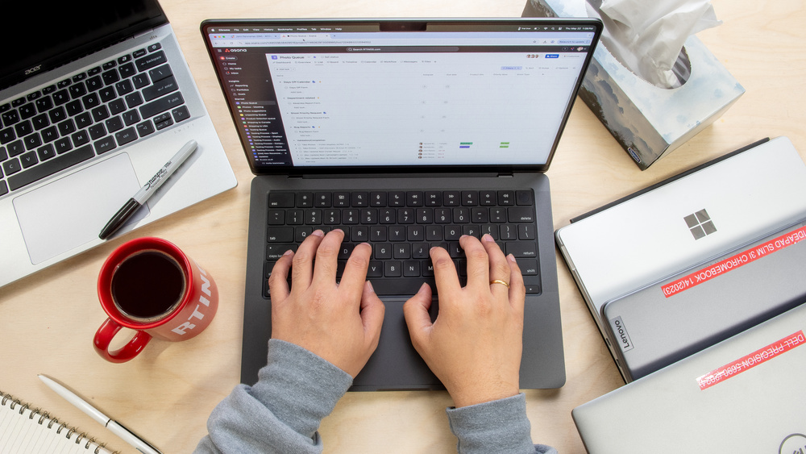

My Medical & Personal Journey
Having to navigate a complex medical history from a young age has played a huge role in defining who I am. It has taught me very valuable life lessons in perseverance, adaptability, and keeping a positive outlook throughout life and every challenge.
Adapting & Overcoming Physical Limits
Having survived two strokes during infancy, I grew up dealing with physical weakness on the left side of my body. Early on, even basic mobility required extra support and a walker to help me stay balanced. Through years of dedicated physical therapy, I built up the strength needed to walk independently across campus today.
Wearing ankle-foot orthosis (AFO) braces became an everyday thing for me to keep my foot stable and give me the extra support I need. While adjusting to physical differences to others took time, learning to accept my journey and build inner resilience has been one of my biggest milestones.
- Physical Progress: Building body strength through continuous physical therapy.
- Daily Support: Relying on AFO leg braces to maintain stability and balance.
- Growth Mindset: Learning not to let physical limitations define my future goals.

Strengthening Confidence & Public Speaking
School brought its own unique set of social and personal challenges. Because my strokes affected my speech , public speaking used to be a major source of anxiety. Explaining my boundaries and disability to new classmates each year felt repetitive at first, but it eventually showed me how I ultimately created more awareness.
Over time, I learned to shift my focus away from self-doubt and focus on self-improvement. Facing public speaking hurdles with a positive mindset has helped me build the confidence I need for future college presentations and career interviews.
- Advocacy: Sharing my experience to create understanding.
- Communication: Overcoming nerves around speech clarity to present effectively.
- Future Focus: Utilizing every obstacle as a stepping stone toward personal success.